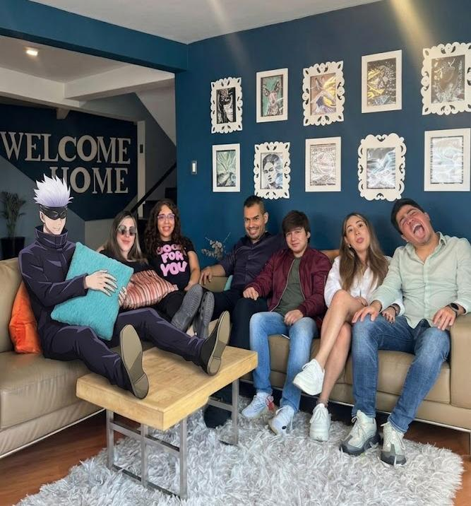
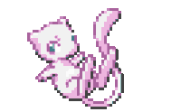

Por Muchos Años Mas ✦
Feliz Cumpleaños!
Hoy es un gran día para celebrar lo especial que eres.
TAP TO CONTINUE
Por Muchos Años Mas ✦
Feliz Cumpleaños!
Hoy es un gran día para celebrar lo especial que eres.
TAP TO CONTINUE

"Haces que cada momento sea especial, incluso los más simples."
TAP TO CONTINUE

Recuerda que hoy todo gira en torno a ti y aúnque estamos a la distancia quise crear esta pequeña página
para recordarte lo especial que eres para mí y lo mucho que te aprecio Lu, espero que hoy disfrutes mucho
en compañía de tu familia, que te mimen mucho y que no olvides que siempre puedes contar conmigo sin importar qué.☀️
Con Cariño,
Majo 🌙